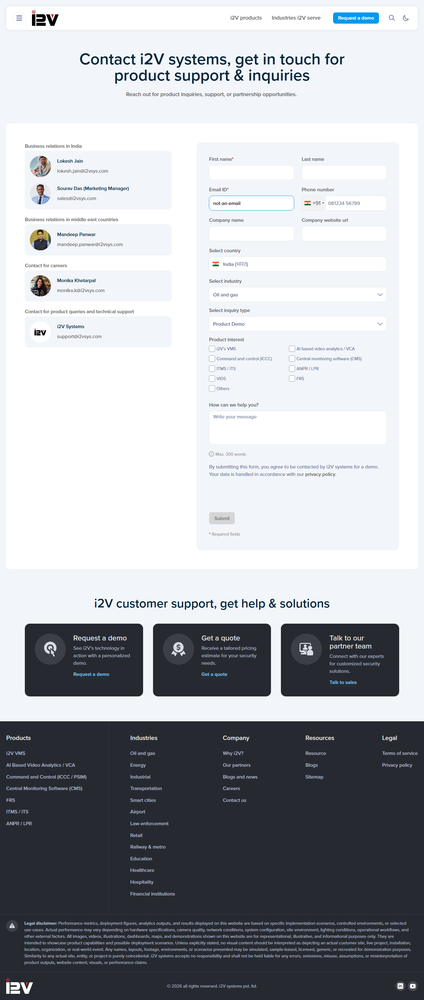
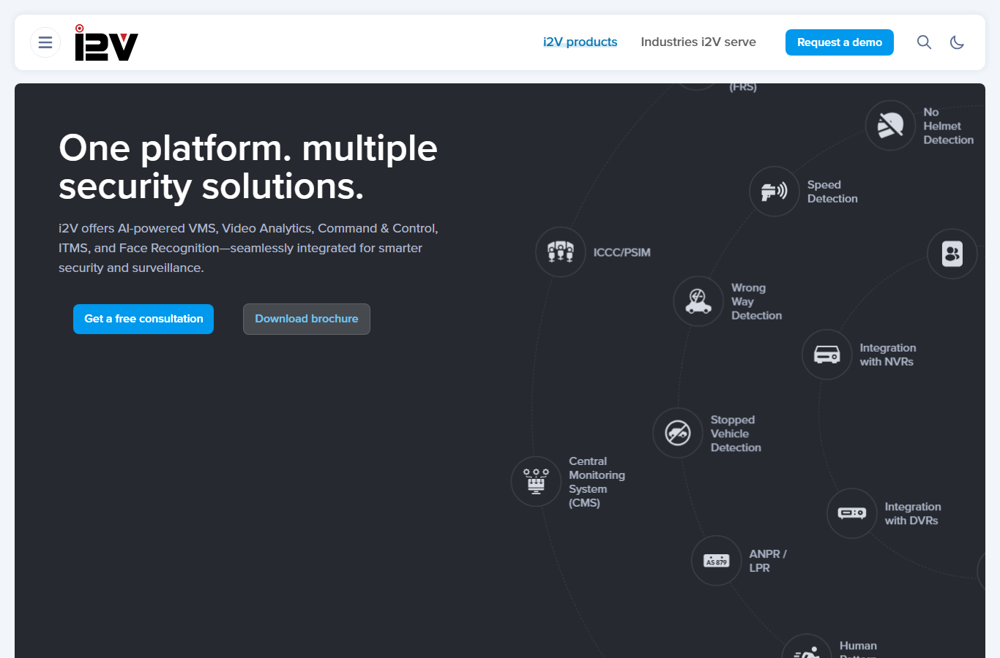

Verdict: The site is functional, secure, and visually polished — all pages return HTTP 200, render
consistently across three browser engines, and have zero horizontal-scroll issues on every device. The dominant
problem is performance / page weight (one page transfers 12–15 MB; effectively unusable on 3G),
alongside a sizeable accessibility gap and a few broken links. Failures are listed first below.
High Excessive page weight & slow load times Performance §1.1
The Why i2V page transfers 12–15 MB; Industries ~5.7 MB; Home pulls 250 resources.
Heaviest assets are full-resolution WebP images, e.g. multi-level-permissions.webp (1.31 MB) and
system-hardening.webp (1.28 MB). Broadband load events run 4.7–6.7 s.
Fix: resize/recompress oversized images, add responsive srcset, lazy-load below-the-fold images and the YouTube/Maps embeds (load on interaction), and put assets behind a CDN with far-future caching.
High Broken "Terms of Use" link sitewide (404) Links §1.2
The footer "Terms of Use" link uses a relative href without a leading slash, so it resolves under the current path and
404s on every sub-page: /products/terms-of-use, /products/video-management-software/terms-of-use.
The correct target /terms-of-use/ was verified working (200).
Fix: change the href to the absolute /terms-of-use/.
High Hundreds of images missing alt text Accessibility §2.4
Home: 401 of 575 images (~70%) have empty/missing alt; similar ratios on every page.
(Some are decorative SVG icons that legitimately use alt="", so the true gap is smaller — but many meaningful
images clearly lack alt text, hurting screen-reader users and SEO.)
Fix: add descriptive alt to meaningful images; explicit alt="" on purely decorative ones.
Medium Unusable on real mobile networks Mobile §4
Home page, throttled: 4G = 12.5 s load · Fast 3G = 57.3 s · Slow 3G = timeout > 90 s.
Same root cause as the page-weight finding — highest real-world impact for phone visitors.
Fix: resolve page weight (above); prioritize critical-path rendering and defer heavy media.
Medium Slow server response (TTFB ~1.3–1.9 s) Performance §1.1
Every page shows ~1.3–1.9 s time-to-first-byte (Apache/WordPress, no edge caching evident), delaying everything downstream.
Fix: add server/page caching, object cache, and a CDN in front of origin.
Medium Email link missing mailto: & broken resource link (404) Links §1.2
An email address is used as a normal link without the prefix → /contact-us/mandeep.panwar@i2vsys.com (404).
A resource download is broken → /resources/i2v-vms-pre-installer-1/ (404).
Fix: prefix the email with mailto:; repoint or remove the dead resource link.
Medium Missing semantic landmarks (<main>, <footer>) Accessibility §2.4
Header & nav exist, but no <main> and no <footer> element were detected — screen-reader landmark navigation suffers.
Fix: wrap primary content in <main> and use a real <footer> element.
Medium Weak / suppressed keyboard focus indicator Accessibility §2.4
Tab order is logical, but computed focus outline width is 0 px with no box-shadow — the visible focus ring appears suppressed (confirm manually).
Fix: add a clear :focus-visible outline/box-shadow for keyboard users.
Medium Mobile menu toggle is not a semantic button Mobile / A11y §4
The hamburger (☰) is visibly present on mobile, but it is not a <button> (0 header buttons; automated open failed) and lacks aria-expanded — likely fine for touch/mouse but not keyboard/AT-friendly.
Fix: convert the toggle to a <button> with aria-expanded/aria-controls.
i2V, i2v, and "i2V systems" (lowercase systems) all appear (e.g. header "Why i2V?" vs footer i2v@i2vsys.com). No placeholder/lorem text found.
Fix: standardize on one form (e.g. "i2V Systems").
Low Two <h1> elements on Home SEO/A11y §2.4
Home has 2× <h1>; there should be exactly one primary heading.
Low No skip-to-content link Accessibility §2.4
No skip link present for keyboard users to bypass the nav.
Low reCAPTCHA 401 console noise in Safari/WebKit Cross-browser §3
Every page logs 401s from google.com/recaptcha/api2/pat under WebKit — known reCAPTCHA telemetry behavior; cosmetic, forms still work.
Low YouTube cookie SameSite warnings in Firefox Cross-browser §3
Embedded video on Why i2V triggers benign third-party __Secure-YEC cookie warnings in Firefox.
Low Minimal Content-Security-Policy & missing form attributes Security/Forms §1.4/1.6
CSP is only upgrade-insecure-requests. Contact-form visible fields lack HTML5 required/aria-required and autocomplete hints (enforcement relies on server-side CF7).
Fix: add a fuller CSP; add required/autocomplete to mandatory contact fields for instant feedback.
103 of 107 crawled links return 200; no broken images in any engine.
Pass Navigation & active state
Header/footer nav all resolve; the current page is marked with aria-current="page" ✓.
Pass Form validation
Email field rejects invalid input ("Please include an '@'…"); type=tel/url fields, <select> dropdowns and reCAPTCHA present across 5 Contact Form 7 instances.
Pass Responsive layout
Zero horizontal scroll across 4 devices × 2 orientations × 3 pages (24 runs); 16 px base font; correct viewport meta; html lang="en-US".
Pass Cross-engine rendering
Consistent layout & functionality across Chromium, Firefox, and WebKit; all pages HTTP 200.
Pass Tel / email links
tel:+919810056691 and 4 valid mailto: addresses on Contact (sales@, support@, i2v@, lokesh.jain@).
Pass UX & visuals
Clear value proposition, logical IA, prominent "Request a demo" CTAs, consistent dark-hero branding, high-contrast headings.
Pass Content cleanliness
No lorem-ipsum/placeholder content; copy is professional aside from brand-capitalization nits.
⚡ Performance Data (Chromium, broadband)
Page
Load event
FCP
TTFB
Transfer
Home
4.77 s
2.59 s
1.75 s
3.6 MB
Why i2V (About)
6.44 s
1.89 s
1.34 s
15.2 MB
Products
5.48 s
2.11 s
1.56 s
1.7 MB
Industries (Solutions)
6.74 s
2.36 s
1.92 s
5.7 MB
Contact Us
6.35 s
2.18 s
1.84 s
0.37 MB
Product‑VMS
4.70 s
1.92 s
1.59 s
1.8 MB
🌐 Cross-Browser Comparison
Metric
Chromium
Firefox
WebKit (Safari)
All pages HTTP 200
✅
✅
✅
Layout / rendering
✅ consistent
✅ consistent
✅ consistent
Avg load event
~5.7 s
~5.9 s
~8.1 s (slowest)
Console errors
0
2 (Why i2V)
4–5 / page (reCAPTCHA 401)
📱 Mobile & Network
Device emulation: iPhone 15 Pro, Pixel 7, iPad Pro 11, Galaxy Tab S4 — portrait & landscape, Home/Products/Contact (24 runs). No horizontal scroll in any run.
Network profile (Home page)
Load event
FCP
4G (~9 Mbps, 60 ms)
12.5 s
3.2 s
Fast 3G (~1.6 Mbps, 150 ms)
57.3 s
7.1 s
Slow 3G (~400 kbps, 400 ms)
timeout > 90 s
—
🖼️ Screenshots
Desktop — HomeMobile — iPhone 15 Pro

Contact form

Desktop — Products
ℹ️ Testing Limitations
No browser-automation MCP was connected; testing used the project's Playwright driving real browser engines.
WebKit is the Safari rendering engine but not native macOS/iOS Safari hardware; devices are emulated (viewport/DPR/touch/UA), not physical phones/tablets.
3G/4G/5G figures use Chromium CDP network emulation, not real cellular radios (5G ≈ the unthrottled broadband numbers).
Forms were validated client-side and inventoried, but not submitted end-to-end to avoid live leads / tripping reCAPTCHA.
Image alt counts include intentionally-decorative images (alt=""), so the true "missing meaningful alt" figure is somewhat lower than 70%.